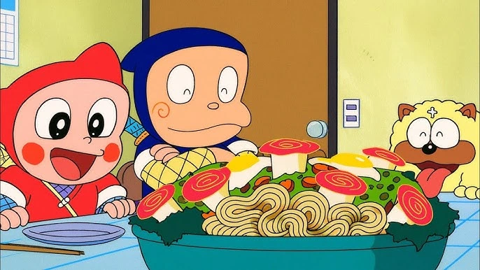

Warm Bowls, Warm Hearts.
Experience the soulful taste of authentic Japanese ramen in Chennai, handcrafted with love, slow-simmered broth, and fresh house-made noodles. We’re a cozy ramen restaurant serving comforting bowls inspired by Tokyo. Explore our full menu or visit our Chennai location.
View Full MenuFrom slow-cooked broth that simmers for over 12 hours to our house-made noodles, every element of our authentic Japanese ramen is crafted with tradition and passion. Shinzo Ramen is a local ramen restaurant in Chennai dedicated to simple, comforting food. Learn more about our story and what makes Shinzo Ramen special.
Read Our Full StoryYes. We serve our Shinzo Vegan Tantanmen, made with a rich cashew and roasted vegetable broth, topped with plant-based crumbles and baby bok choy.
Yes. You can order ramen online for delivery or pickup through our partner platforms. Visit our Order Online page to place your order.
We are open Tuesday to Friday from 11:30 AM to 9:00 PM, and Saturday to Sunday from 12:00 PM to 10:00 PM. We are closed on Mondays for broth preparation.
We are located at 123 Ramen Lane, Chennai, Tamil Nadu. You can find directions on our Find Us page.
Yes. We make our noodles fresh in-house every day using a traditional Japanese recipe, designed to perfectly complement our slow-simmered broths.